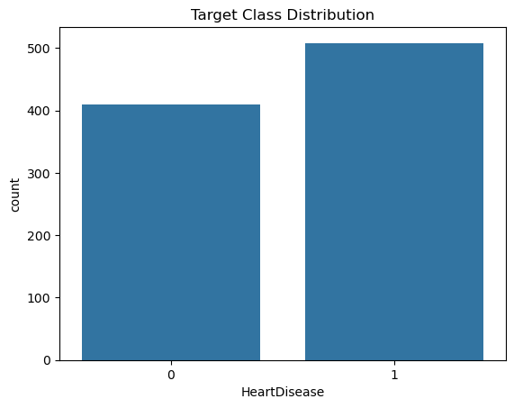
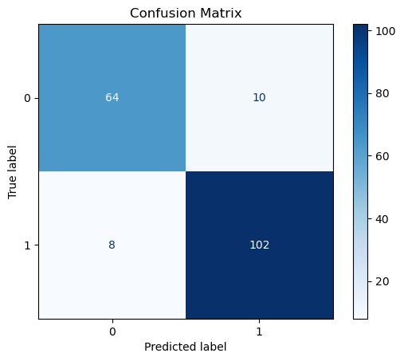
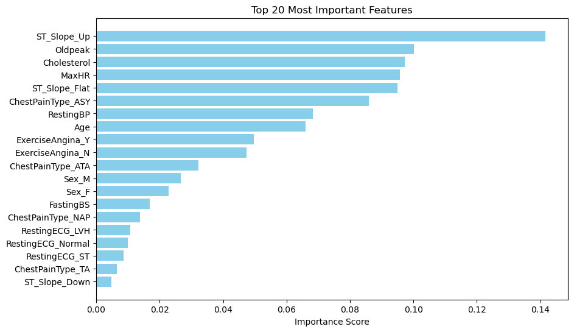

Heart Disease Classification Pipeline#
This notebook provides a pipeline for binary classification of heart disease prediction.
Steps Covered:#
Data loading
Exploratory Data Analysis (EDA)
Feature engineering
Model training using a pipeline
Hyperparameter tuning
Model evaluation
Import the modules needed for the project#
import pandas as pd
import matplotlib.pyplot as plt
from sklearn.compose import ColumnTransformer
from sklearn.pipeline import Pipeline
from sklearn.preprocessing import StandardScaler, OneHotEncoder
from sklearn.impute import SimpleImputer
from sklearn.model_selection import train_test_split, GridSearchCV, StratifiedKFold
from sklearn.ensemble import RandomForestClassifier
from sklearn.linear_model import LogisticRegression
from sklearn.metrics import classification_report, confusion_matrix, ConfusionMatrixDisplay, accuracy_score
import seaborn as sns
---------------------------------------------------------------------------
ModuleNotFoundError Traceback (most recent call last)
Cell In[1], line 1
----> 1 import pandas as pd
2 import matplotlib.pyplot as plt
3 from sklearn.compose import ColumnTransformer
ModuleNotFoundError: No module named 'pandas'
The dataset used in this project was sourced from Kaggle. It is the “Heart Failure Prediction Dataset” created and shared by the user Fedesoriano. This dataset contains clinical records of heart failure patients sourced from https://archive.ics.uci.edu/ml/datasets/Heart+Disease.
Description
Context: Heart disease is the leading cause of death around the world. According to the World Health Organization, heart disease accounted for 13% of global deaths in 2021. The number of heart disease deaths has been rising, increasing from 2.1 million to 9.1 million in 2021. Work needs to be done to manage heart disease deaths better.
Content: This project aims to predict which patients are most likely to develop heart disease based on the available features.
# Load heart disease dataset
data = pd.read_csv("heart_disease_original.csv")
data.head()
| Age | Sex | ChestPainType | RestingBP | Cholesterol | FastingBS | RestingECG | MaxHR | ExerciseAngina | Oldpeak | ST_Slope | HeartDisease | |
|---|---|---|---|---|---|---|---|---|---|---|---|---|
| 0 | 40 | M | ATA | 140 | 289 | 0 | Normal | 172 | N | 0.0 | Up | 0 |
| 1 | 49 | F | NAP | 160 | 180 | 0 | Normal | 156 | N | 1.0 | Flat | 1 |
| 2 | 37 | M | ATA | 130 | 283 | 0 | ST | 98 | N | 0.0 | Up | 0 |
| 3 | 48 | F | ASY | 138 | 214 | 0 | Normal | 108 | Y | 1.5 | Flat | 1 |
| 4 | 54 | M | NAP | 150 | 195 | 0 | Normal | 122 | N | 0.0 | Up | 0 |
Exploratory Data Analytics#
# Print a quick summary of the data and statistical information
data.info()
print()
data.describe()
<class 'pandas.core.frame.DataFrame'>
RangeIndex: 918 entries, 0 to 917
Data columns (total 12 columns):
# Column Non-Null Count Dtype
--- ------ -------------- -----
0 Age 918 non-null int64
1 Sex 918 non-null object
2 ChestPainType 918 non-null object
3 RestingBP 918 non-null int64
4 Cholesterol 918 non-null int64
5 FastingBS 918 non-null int64
6 RestingECG 918 non-null object
7 MaxHR 918 non-null int64
8 ExerciseAngina 918 non-null object
9 Oldpeak 918 non-null float64
10 ST_Slope 918 non-null object
11 HeartDisease 918 non-null int64
dtypes: float64(1), int64(6), object(5)
memory usage: 86.2+ KB
| Age | RestingBP | Cholesterol | FastingBS | MaxHR | Oldpeak | HeartDisease | |
|---|---|---|---|---|---|---|---|
| count | 918.000000 | 918.000000 | 918.000000 | 918.000000 | 918.000000 | 918.000000 | 918.000000 |
| mean | 53.510893 | 132.396514 | 198.799564 | 0.233115 | 136.809368 | 0.887364 | 0.553377 |
| std | 9.432617 | 18.514154 | 109.384145 | 0.423046 | 25.460334 | 1.066570 | 0.497414 |
| min | 28.000000 | 0.000000 | 0.000000 | 0.000000 | 60.000000 | -2.600000 | 0.000000 |
| 25% | 47.000000 | 120.000000 | 173.250000 | 0.000000 | 120.000000 | 0.000000 | 0.000000 |
| 50% | 54.000000 | 130.000000 | 223.000000 | 0.000000 | 138.000000 | 0.600000 | 1.000000 |
| 75% | 60.000000 | 140.000000 | 267.000000 | 0.000000 | 156.000000 | 1.500000 | 1.000000 |
| max | 77.000000 | 200.000000 | 603.000000 | 1.000000 | 202.000000 | 6.200000 | 1.000000 |
Observations#
There seems to be potential outliers in the dataset, specifically in blood pressure and cholesterol measurements.
The minimum values of 0.0 for resting blood pressure and cholesterol likely represent missing data rather than actual measurements.
The maximum values, 200.0 for resting blood pressure and 603.0 for cholesterol, are extremely high and potentially concerning from a medical perspective.
The maximum heart rate interquartile range measurements suggest that these were taken during exercise testing rather than at rest.
print(data.isnull().sum())
Age 0
Sex 0
ChestPainType 0
RestingBP 0
Cholesterol 0
FastingBS 0
RestingECG 0
MaxHR 0
ExerciseAngina 0
Oldpeak 0
ST_Slope 0
HeartDisease 0
dtype: int64
The dataset does not contain any missing values.
Target Variable Distribution Count#
sns.countplot(x='HeartDisease', data=data)
plt.title('Target Class Distribution')
plt.show()

Data Preprocessing#
Ensure proper handling of different data types before model training.
First, separate features (
X) from the target variable (y):Identify different feature types:
numeric_featurescaptures all numerical columnscategorical_featurescaptures all object/string columns
Create specialized preprocessing pipelines:
For numeric features: applies the mean for missing values, then standardizes the data
For categorical features: fills missing values with the most frequent value, then applies one-hot encoding
Finally, combine these pipelines into a single
ColumnTransformerthat will:Apply the numeric pipeline to all numeric columns
Apply the categorical pipeline to all categorical columns
Process both types of features appropriately in parallel
# Define features and target
X = data.drop('HeartDisease', axis=1)
y = data['HeartDisease']
# Identify feature types
numeric_features = X.select_dtypes(include=['number']).columns
categorical_features = X.select_dtypes(include=['object']).columns
# Create preprocessing pipelines
numeric_transformer = Pipeline(steps=[
('imputer', SimpleImputer(strategy='mean')),
('scaler', StandardScaler())
])
categorical_transformer = Pipeline(steps=[
('imputer', SimpleImputer(strategy='most_frequent')),
('onehot', OneHotEncoder(handle_unknown='ignore'))
])
preprocessor = ColumnTransformer(transformers=[
('num', numeric_transformer, numeric_features),
('cat', categorical_transformer, categorical_features)
])
Split the data into 80% training and 20% testing sets. Fit the pipeline with the training data.
# Define the model pipeline
clf = Pipeline(steps=[
('preprocessor', preprocessor),
('classifier', RandomForestClassifier(random_state=1))
])
# Train-test split
X_train, X_test, y_train, y_test = train_test_split(X, y, test_size=0.2, random_state=1)
# Fit the model
clf.fit(X_train, y_train)
Pipeline(steps=[('preprocessor',
ColumnTransformer(transformers=[('num',
Pipeline(steps=[('imputer',
SimpleImputer()),
('scaler',
StandardScaler())]),
Index(['Age', 'RestingBP', 'Cholesterol', 'FastingBS', 'MaxHR', 'Oldpeak'], dtype='object')),
('cat',
Pipeline(steps=[('imputer',
SimpleImputer(strategy='most_frequent')),
('onehot',
OneHotEncoder(handle_unknown='ignore'))]),
Index(['Sex', 'ChestPainType', 'RestingECG', 'ExerciseAngina', 'ST_Slope'], dtype='object'))])),
('classifier', RandomForestClassifier(random_state=1))])In a Jupyter environment, please rerun this cell to show the HTML representation or trust the notebook. On GitHub, the HTML representation is unable to render, please try loading this page with nbviewer.org.
Pipeline(steps=[('preprocessor',
ColumnTransformer(transformers=[('num',
Pipeline(steps=[('imputer',
SimpleImputer()),
('scaler',
StandardScaler())]),
Index(['Age', 'RestingBP', 'Cholesterol', 'FastingBS', 'MaxHR', 'Oldpeak'], dtype='object')),
('cat',
Pipeline(steps=[('imputer',
SimpleImputer(strategy='most_frequent')),
('onehot',
OneHotEncoder(handle_unknown='ignore'))]),
Index(['Sex', 'ChestPainType', 'RestingECG', 'ExerciseAngina', 'ST_Slope'], dtype='object'))])),
('classifier', RandomForestClassifier(random_state=1))])ColumnTransformer(transformers=[('num',
Pipeline(steps=[('imputer', SimpleImputer()),
('scaler', StandardScaler())]),
Index(['Age', 'RestingBP', 'Cholesterol', 'FastingBS', 'MaxHR', 'Oldpeak'], dtype='object')),
('cat',
Pipeline(steps=[('imputer',
SimpleImputer(strategy='most_frequent')),
('onehot',
OneHotEncoder(handle_unknown='ignore'))]),
Index(['Sex', 'ChestPainType', 'RestingECG', 'ExerciseAngina', 'ST_Slope'], dtype='object'))])Index(['Age', 'RestingBP', 'Cholesterol', 'FastingBS', 'MaxHR', 'Oldpeak'], dtype='object')
SimpleImputer()
StandardScaler()
Index(['Sex', 'ChestPainType', 'RestingECG', 'ExerciseAngina', 'ST_Slope'], dtype='object')
SimpleImputer(strategy='most_frequent')
OneHotEncoder(handle_unknown='ignore')
RandomForestClassifier(random_state=1)
Here we are using the classifier to make predictions on the testing dataset.
We also want to print a report on how well the model did.
# Predictions and evaluation
y_pred = clf.predict(X_test)
print("\nClassification Report:")
print(classification_report(y_test, y_pred))
print(f"Accuracy Score: {accuracy_score(y_test, y_pred):.2f}")
Classification Report:
precision recall f1-score support
0 0.89 0.86 0.88 74
1 0.91 0.93 0.92 110
accuracy 0.90 184
macro avg 0.90 0.90 0.90 184
weighted avg 0.90 0.90 0.90 184
Accuracy Score: 0.90
Observations#
The model did relatively well with 90% correct predictions.
The F1-scores for both classes are close, indicating that the model is well-balanced and does not overly favor one class.
Class 1 slightly outperforms Class 0 in all metrics, suggesting the model is more effective at correctly identifying instances of Class 1.
Hyperparameter Tuning#
# Create a 5-fold cross-validator
cv = StratifiedKFold(n_splits=5, shuffle=True)
# Grid search for hyperparameter tuning
param_grid = {
'classifier__n_estimators': [50, 100],
'classifier__max_depth': [10, 20],
'classifier__min_samples_split': [2, 5]
}
grid_search = GridSearchCV(clf, param_grid, cv=cv, scoring='accuracy')
grid_search.fit(X_train, y_train)
print("Best Parameters:", grid_search.best_params_)
print(f"Best Cross-validation Accuracy: {grid_search.best_score_:.2f}")
Best Parameters: {'classifier__max_depth': 20, 'classifier__min_samples_split': 5, 'classifier__n_estimators': 50}
Best Cross-validation Accuracy: 0.86
Observations#
The model performs its best with
Max Depth: 10
Min Samples Split: 5
Num Estimators: 100
Confusion Matrix#
conf_matrix = confusion_matrix(y_test, y_pred)
disp = ConfusionMatrixDisplay(confusion_matrix=conf_matrix)
disp.plot(cmap='Blues')
plt.title('Confusion Matrix')
plt.show()

The model obtained a true positive rate of 102/112 or 91% rate.
The model classified 8 positive heart disease cases as class 0.
Feature Engineering#
feature_importances = grid_search.best_estimator_['classifier'].feature_importances_
print("Number of numeric features:", len(numeric_features))
print("Number of categorical features:", len(categorical_features))
cat_pipeline = grid_search.best_estimator_['preprocessor'].named_transformers_['cat']
onehot_encoder = cat_pipeline.named_steps['onehot']
cat_feature_names = list(onehot_encoder.get_feature_names_out(categorical_features))
print("Number of one-hot encoded categorical features:", len(cat_feature_names))
feature_names = list(numeric_features) + cat_feature_names
print("Total feature names count:", len(feature_names))
feature_importances = grid_search.best_estimator_['classifier'].feature_importances_
print("Feature importances count:", len(feature_importances))
Number of numeric features: 6
Number of categorical features: 5
Number of one-hot encoded categorical features: 14
Total feature names count: 20
Feature importances count: 20
importance_df = pd.DataFrame({
'Feature': feature_names,
'Importance': feature_importances
}).sort_values(by='Importance', ascending=False)
N = 20 # Number of top features to plot
top_features = importance_df.head(N)
plt.figure(figsize=(10, 6))
plt.barh(top_features['Feature'], top_features['Importance'], color='skyblue')
plt.gca().invert_yaxis() # Most important on top
plt.title(f'Top {N} Most Important Features')
plt.xlabel('Importance Score')
plt.show()

Observations#
ST_Slope, Oldpeak, MaxHR, cholestoral, and ChestPainType_ASY have high importance in determining heart disease.
RestingBP, Age, and ExerciseAngina_Y have moderate importance in determing heart disease.
All features falling below a score 0.05 have low importance in determinig heart disease.